Native Alternative 1.4.5 code presentation, reading preferences and light/dark HTML previews, and current workflow images.
Tags: Screenshots
[download original] [view raw text] — 5,205 bytes
On this page
Local Alternative 1.4.5 — screenshot guide
Reading and HTML features
These screenshots show the public Local Alternative 1.4.5 native Linux interface with fictional Demo conversations at 1600 × 1000 and 100% zoom. They cover current reading, rendering and speech controls without connecting a live server.
Reading preferences and code presentation
Settings → Reading & appearance includes Wrap long code lines and Show code line numbers. They are independent display preferences, disabled by default, and Alternative saves changed preferences automatically.
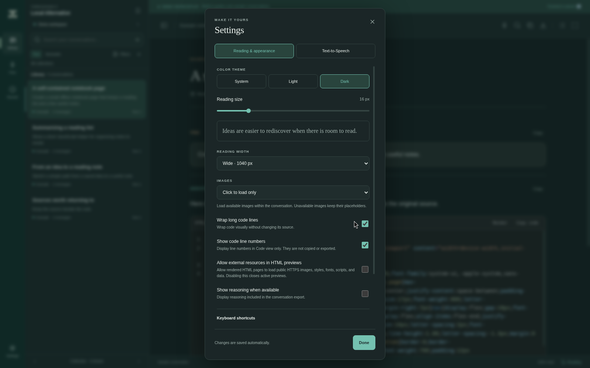
The light-mode example shows the corresponding Code view. Numbers identify logical source lines, including blank lines. Copy and export retain the original source without the gutter or wrapping changes.
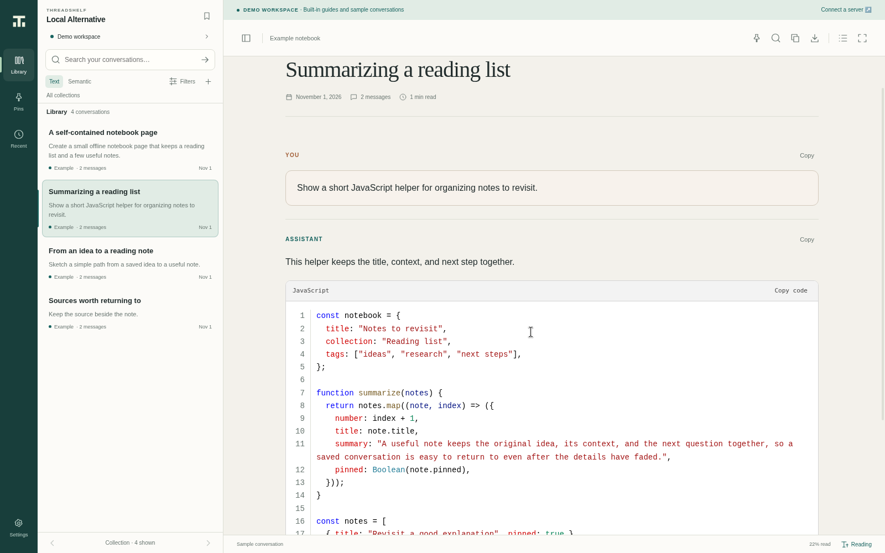
Native HTML rendering in light and dark
Eligible complete HTML documents start in Code view. Selecting Render opens an isolated native preview inside the code block. It uses the available interior width at a responsive 16:9 ratio, without an extra frame or margin. Loading is transparent; rendering has no line-number gutter. The native surface stays clipped to its reading location during resizing, zooming and scrolling.
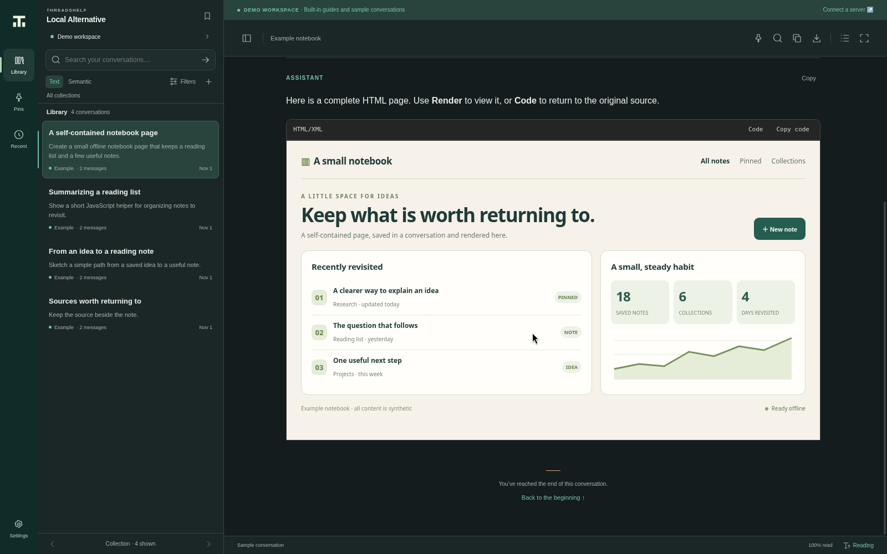
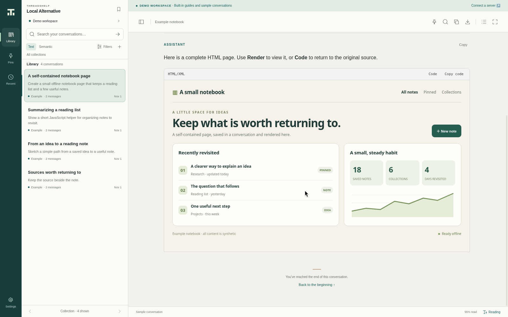
See reading and rendering and settings for source-copying behavior and preview safety boundaries.
Library and workflow controls
These additional 1.4.5 native captures use the released application and bundled fictional Demo library. Speech settings illustrate the real controls and do not claim successful paid-provider requests.
Reading in light and dark
The shelf and prompt outline support moving through conversations while the main pane keeps the selected thread visible. These are the same synthetic demo library in both palettes.
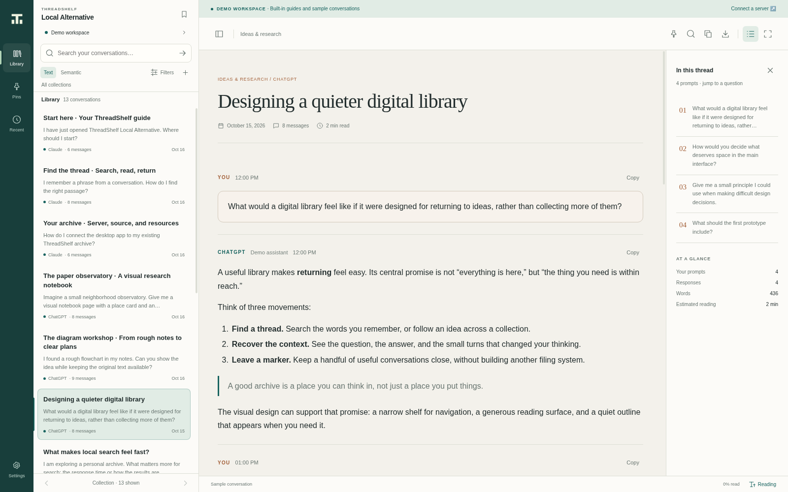
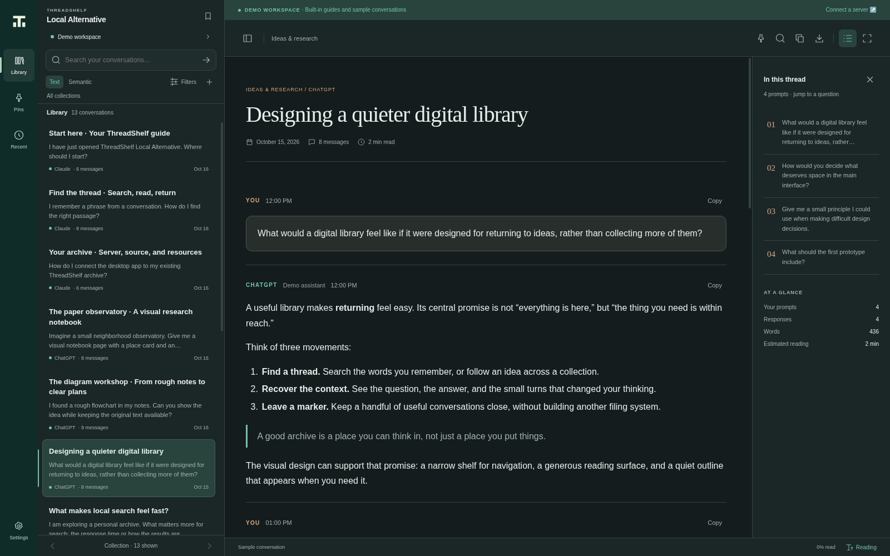
Settings and version
Theme, reading size, reading width, image loading and exported-reasoning visibility are saved automatically. The current application version is 1.4.5.
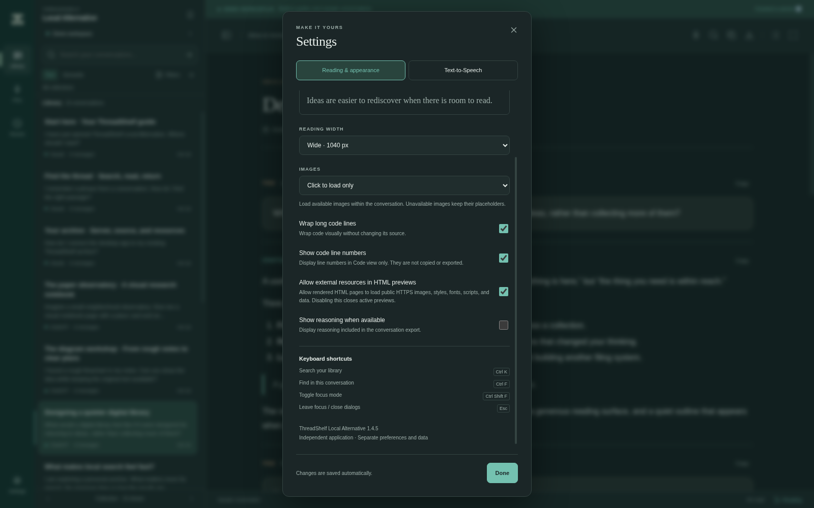
Search and a matched passage
The text query “semantic search” has two matches in the bundled demonstration library. Search highlights help locate matching text in the selected thread. Live-server pagination and semantic ranking depend on the connected server and are not established by this demo image.
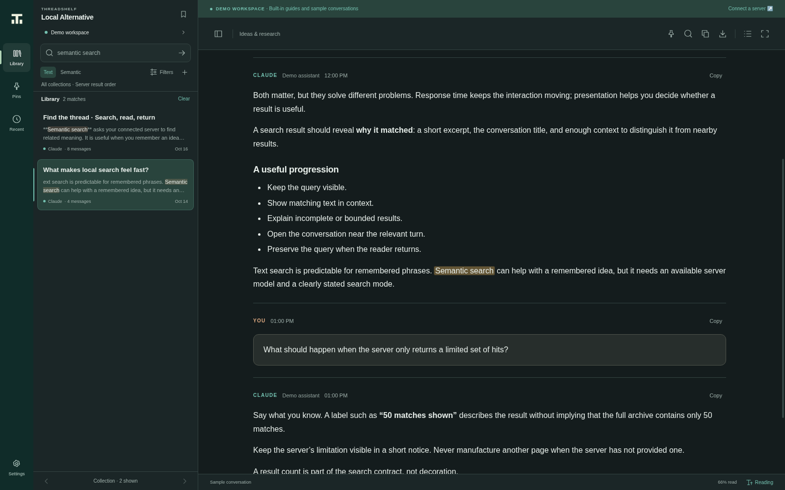
Connection form
Enter the final base address of your own ThreadShelf server. The generic local example is not a shipped server instance. Follow the connection guide and optional 1.3.0 search integration.
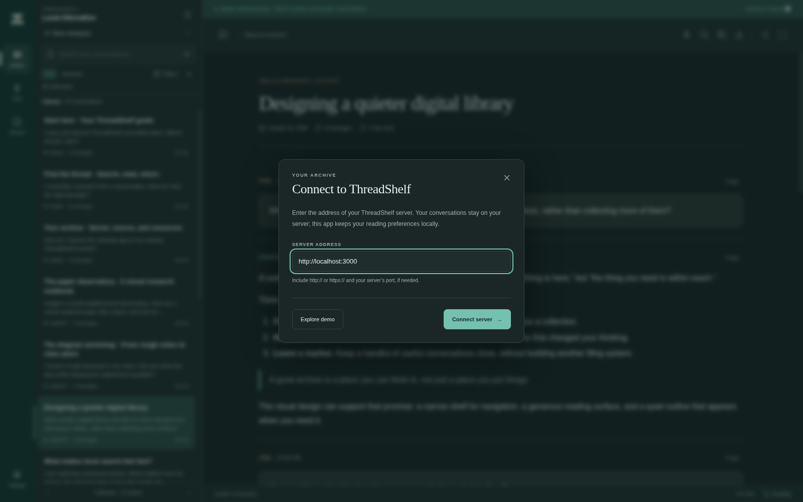
Text-to-Speech playback
The Playback section enables message speaker buttons and sets reasoning, streaming, volume, speed and optional bar controls. The TTS navigation remains above its scrolling content. See Text-to-Speech for the automatic-save workflow.
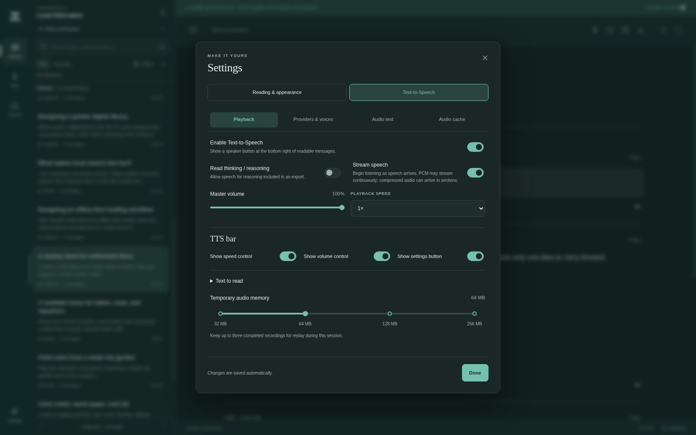
Providers and voice testing
Choose a bundled CPU voice or configure a compatible remote provider. These captures use the bundled Pocket TTS engine and Alba voice. The test passage was generated locally and paused after playback; the output meter measures played audio without microphone input. No remote provider was called.
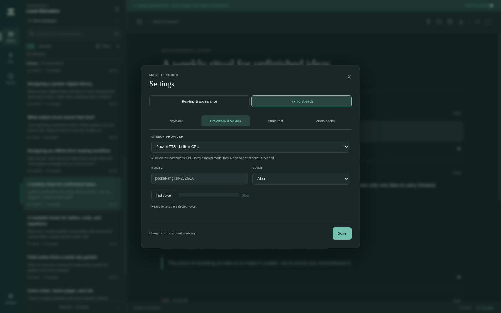
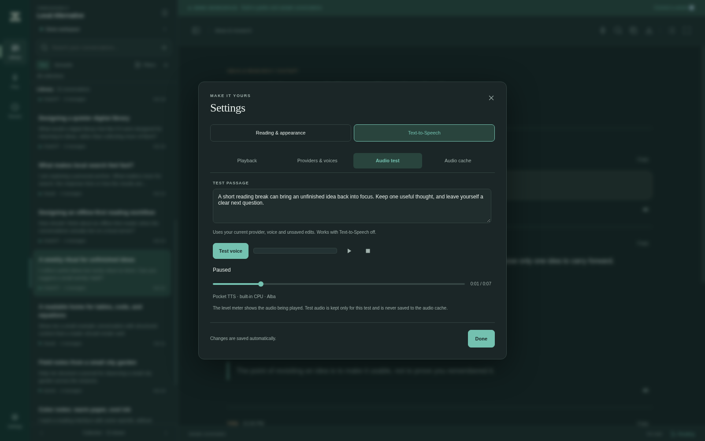
Audio cache
The cache capture contains actual locally generated conversation audio, saved to disk and pinned through the interface. Persistent audio caching is opt-in. Pinned recordings take priority for an unchanged full message and survive voice/provider changes; Prefer API recordings is on by default. Review deletion counts before cleanup; pinned clips are protected by default and active playback is always protected. Temporary session recordings and saved disk clips have separate totals.
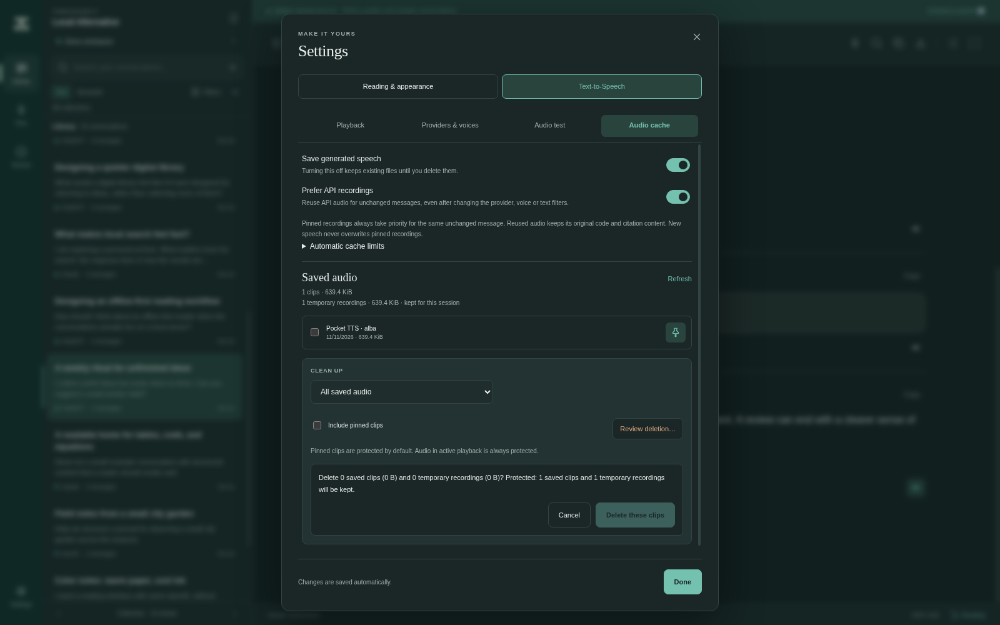